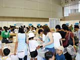
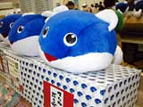

 会場奥に設置された物販コーナーは、キャラクターグッズやお菓子などが目白おしです。ここでしか手に入らない商品もあるので、来場者の楽しみのひとつでもあります。特に遠方から来たお客さんにはおみやげとして絶大な人気を誇るようですよ。
開場してすぐに物販コーナーに走ったのは下村和也くん。なんと朝４時に横浜の自宅を出てきたそうです。下村くんがゲットしたのは、ポケモンのＣＤと劇場限定商品のバッジ。このあとはお友達と一緒に、ゲームボーイアドバンスのコーナーを回るそうです。北海道から泊まりがけでやってきたのは吉本さん親子。「毎年、このイベントに来てるんです」とお母さん。スゴい熱意ですね！ 吉本さん親子がゲットしたのはマムルの大きなぬいぐるみ。『風来のシレン２ 鬼襲来！ シレン城！』のキャラクターですね。先行商品なので、絶対手に入れたかったとか。そのほかにも、ポケモン関係のグッズをたくさん買っていました。
スタッフにも話を聞いてみましょう。物販コーナーで忙しく働いていた小学館プロダクションの平野慎太郎さんです。「売れすじは文房具関係ですね。特にポケモンのノートなどは最初に売りきれてしまいます。また、ポケモンの劇場用バッジも人気です。それ以外では、『風来のシレン』のマムルのぬいぐるみ、マムルボンボンですね。これはこの会場でいち早く売り出した先行商品ですので、人気があります」。平野さんによると、親子でやってきてグッズを買ったあと、おみやげにお菓子を買っていく人も多かったとか。そうそう、ポケモンのクッキーや人形焼も大人気だったみたいですよ。
レジでは両手にたくさんの商品を持って並んでいる人も目立ちました。みなさん、自分のぶんだけでなく、家族や友だちへのおみやげも買っているようですね。朝は比較的空いていた物販コーナーも、開場から１時間もしないうちに黒山の人だかり。コーナー出口ではお目当ての商品をゲットした子どもたちが、うれしそうにお互いの商品を見せあっていました。
|